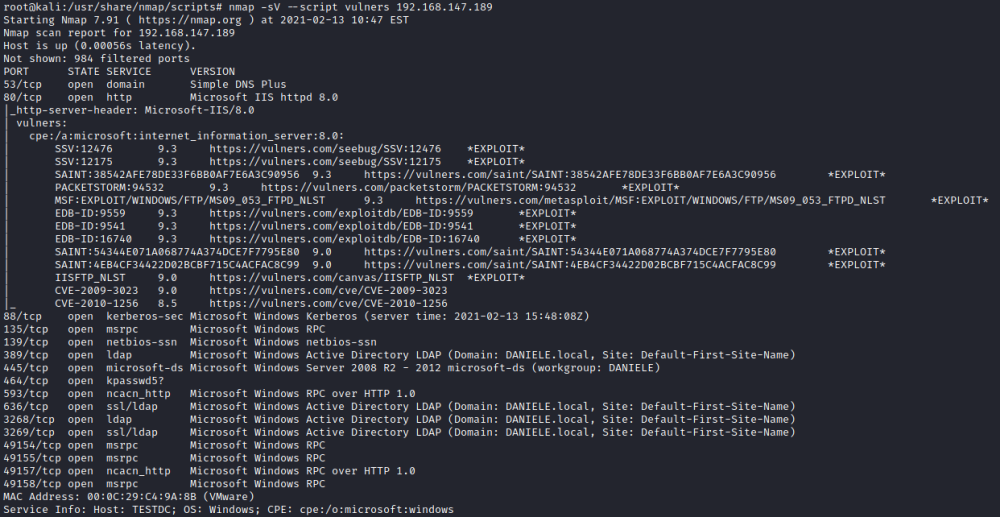

NSE Vulnerability Scanners
VulnersVulners:
https://nmap.org/nsedoc/scripts/vulners.htmlGithub:
https://github.com/vulnersCom/nmap-vulners/blob/master/vulners.nseUsage:
root@kali:/# nmap --script-updatedb
root@kali:/# nmap -sV --script vulners <target>
VulscanIt is not updated like
Vulners
Usage:
root@kali:/# cd /usr/share/nmap/scripts/
root@kali:/# git clone https://github.com/scipag/vulscan.git
root@kali:/# nmap -sV --script=vulscan/vulscan.nse 192.168.147.189
Update:
root@kali:/# cd /usr/share/nmap/scripts/vulscan
root@kali:/# git pull
Scripts for open portsautorecon for every ports make a scan with nmap
NSE scripts.
We can found what are these scripts here:
https://github.com/Tib3rius/AutoRecon/tree/92492733892453953fbb6d0b0c4d6f82b9fc37d2/autorecon/default-plugins